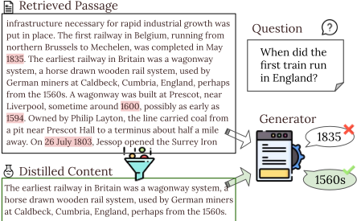
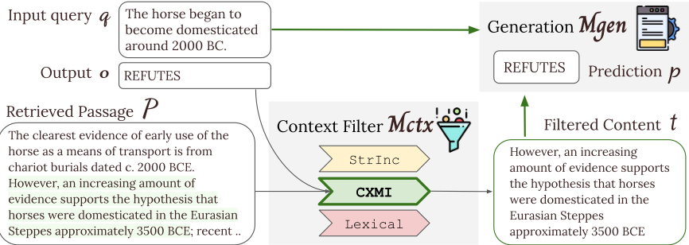
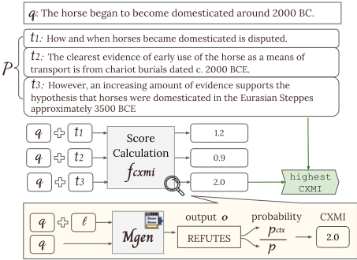
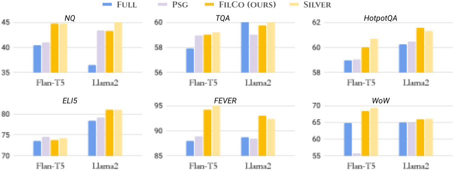
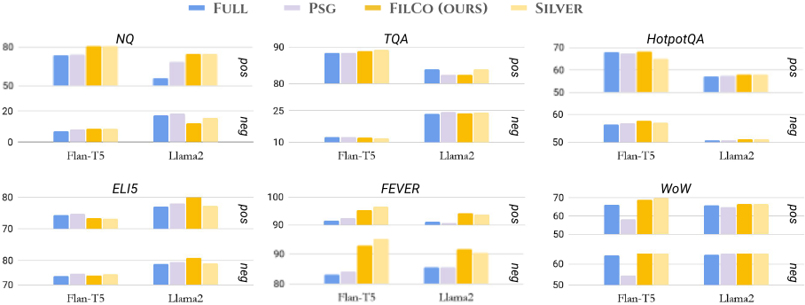
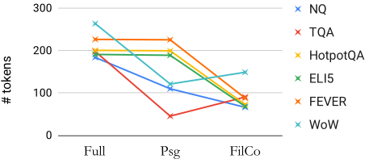

学习为检索增强生成（RAG）过滤上下文
论文针对 RAG 中检索器不完美、返回段落部分或完全无关，导致生成模型产生幻觉或错误依赖上下文的问题，提出 FILCO 方法：训练时用三种度量（STRINC 字符串包含、LEXICAL 词面重叠、CXMI 条件交叉互信息）从检索段落中自动筛选句子级支持性内容作为 silver 数据，据此训练上下文过滤模型 M_ctx，在测试时先过滤检索结果再交给生成模型 M_gen。在 NQ、TQA、HotpotQA、ELI5、FEVER、WoW 六个知识密集型任务上，基于 FLAN-T5 与 LLAMA2 的实验显示 FILCO 全面优于全量上下文与段落级过滤基线，平均提升 2.8/3.0 分，输入长度缩短 44-64%，训练与推理计算量至少降低 4.7 倍。论文还给出策略适配经验：抽取式 QA 宜用 STRINC，对话生成宜用 LEXICAL，多跳等复杂任务宜用 CXMI。对团队的知识库问答等 RAG 场景，这是一篇关于上下文质量管理的直接可借鉴工作。
在检索增强生成（RAG）中，检索系统并不完美，常返回部分或完全无关的段落；生成模型在这些噪声上下文上训练和推理时，容易对正例段落内部的干扰内容分心，或对负例段落过度利用，从而产生幻觉等问题。论文要解决的是如何在测试时（答案未知的情况下）过滤检索到的上下文，只保留精确支持输出的内容。
FILCO 采用两阶段训练：(1) Oracle 上下文构造——用三种度量从检索段落中选取句子级最优文本片段：STRINC（片段是否字面包含输出）、LEXICAL（片段与输出或查询的 unigram F1 重叠，阈值 0.5）、CXMI（提供该片段前后生成模型输出概率之比，阈值 1.0）；(2) 用 silver 过滤上下文训练过滤模型 M_ctx（输入 query 与检索段落、生成过滤后上下文），再用过滤后上下文训练生成模型 M_gen；测试时串联 M_ctx 与 M_gen。过滤粒度为句子级（用 spaCy 分句），实验表明优于段落级过滤基线 PSG。不同任务适配不同度量：NQ/TQA 用 STRINC，FEVER 用 LEXICAL，WoW/HotpotQA/ELI5 用 CXMI。
六个数据集上全面超过 FULL（全量上下文）与 PSG（段落级过滤）基线；FLAN-T5 与 LLAMA2 平均分别提升 2.8 与 3.0 分
抽取式 QA：NQ 上 +4.3（FLAN-T5）/+8.6（LLAMA2）EM，TQA 上 +1.1/+0.2 EM
复杂 QA：HotpotQA 上 +1.0/+1.3 F1，ELI5 上 +0.6/+2.6 EM
抽象生成任务：FEVER 上 +6.2/+4.3 accuracy，WoW 上 +3.5/+1.1 F1
FILCO 将模型输入长度减少 44-64%
SILVER 过滤显著提升输出对上下文的 unigram precision，如 HotpotQA +14.5、WoW +60.7；模型过滤结果与 SILVER 基本相当，TQA 上甚至 +3.8
top-5 多段落设置下，FILCO 比 FULL/PSG 高 +1.2~14.2 分，并超过 RAG、FiD、EVI 等已有方法
使用过滤后内容的生成模型在训练与推理时计算量至少降低 4.7 倍
与以往在段落级做重排或证据段落选择的方法（如 Asai et al. 2022 的 evidentiality-guided generation）不同，FILCO 在更细的句子级（且可扩展到任意粒度）过滤上下文，能去除正例段落内部的干扰内容；同时提出三种无需人工标注的 oracle 度量来自动构造过滤模型的训练数据，并系统给出任务类型与过滤策略适配的经验结论。
相关度级别：high
命中能力域：3.1 上下文工程与记忆 | 3.5 评测与可靠使用
理由：论文核心是 RAG 场景下的上下文质量管理与压缩：句子级过滤、去除干扰内容、缩短 prompt，直接命中 3.1 的 RAG/检索增强与上下文压缩、结构化上下文组织；同时带来 44-64% 输入缩短与至少 4.7 倍计算节省、降低幻觉，涉及 3.5 的成本与效率优化及可靠性。团队构建知识库问答等 RAG 应用时，检索噪声与上下文组织是日常核心问题，该文提供了可训练的过滤层、无需人工标注的数据构造方法与策略选择经验，可直接借鉴。
建议动作：深入精读并做内部分享
arXiv:2311.08377v1 [cs.CL] 2023年11月14日
♠ 卡内基梅隆大学 ♦ 博世研究院 {zhiruow,zhengbaj,gneubig}@cs.cmu.edu
即时检索相关知识已被证明是开放域问答和事实验证等任务中可靠系统的关键要素。然而，由于检索系统并不完美，生成模型需要在给定部分或完全无关段落的情况下生成输出。这可能导致对上下文的过度依赖或依赖不足，并在生成的输出中引发诸如幻觉之类的问题。为缓解这些问题，我们提出了 FILCO，该方法通过以下方式提升提供给生成器的上下文的质量：(1) 基于词汇和信息论方法识别有用的上下文；(2) 训练能够在测试时过滤检索所得上下文的上下文过滤模型。我们使用 FLAN-T5 和 LLAMA2 在六个知识密集型任务上进行实验，结果表明我们的方法在抽取式问答（QA）、复杂多跳问答和长文本问答、事实验证以及对话生成任务上优于现有方法。无论上下文是否支持标准输出，FILCO 都能有效提升上下文的质量。1
检索增强生成（RAG）方法已被证明对许多知识密集型语言任务有效，例如开放域问答和事实验证，能够产生更忠实（Khandelwal et al., 2020; Lewis et al., 2020; Shuster et al., 2021; Komeili et al., 2022）、更可解释（Guu et al., 2020）且更具泛化能力（Khandelwal et al., 2021）的输出。尽管事实上的通行做法是不加区分地将检索得到的排名靠前的段落提供给生成器，但不完善的检索系统常常返回无关或干扰性的内容。于是，生成模型在部分或完全无关段落的引导下被训练来产生标准输出，因而容易产生幻觉或虚假记忆。
1 https://github.com/zorazrw/filco

理想情况下，模型应当以精确支持的内容为依据来生成正确的输出。然而，仅凭不完善的检索系统很难实现这种理想的接地（grounding）。一方面，正例段落（即支持输出的段落）有时会包含干扰性内容。例如在图 1 中，尽管包含实际支持内容的段落被成功检索到，模型仍然未能对支持内容给予足够的关注，而是被具有相似主题的周围句子分散了注意力（Shi et al., 2023）。另一方面，模型会学会像使用正例段落那样过度利用负例段落，例如从无关段落中抽取片段，而这必然是不正确的。这可能会降低准确率，因为使用更高质量的上下文进行训练通常能带来更好的性能（Dou et al., 2021）。
一些工作尝试在段落层面优化所提供的内容，例如通过重排序使更相关的段落升至检索列表的顶部（Wang et al., 2018; Nogueira and Cho, 2020; Mao et al., 2021），仅选择包含证据的段落纳入（Asai et al., 2022），或仅在生成模型需要辅助时才检索段落（Mallen et al., 2023; Jiang et al., 2023）。Choi et al. (2021) 提出通过整合上下文来使句子去语境化，但这需要大量的人工标注工作，并且即使在正例段落中仍可能受到干扰性内容的影响。

在本文中，我们提出了 FILCO（§2），该方法以细粒度的逐句方式学习过滤（FILter）检索到的上下文（COntext），其训练所用的内容通过三种度量来选取：(i) STRINC：段落是否包含生成输出；(ii) LEXICAL 重叠：内容与输出之间的一元词（unigram）重叠程度；(iii) 条件交叉互信息（CXMI）：在提供内容的情况下，生成器生成输出的可能性会提高多少。
我们在来自三个任务的六个知识密集型语言数据集上进行实验（§3）。(1) 问答：包括 NaturalQuestions（NQ）和 Trivia QA（TQA），以及更复杂的多跳 HotpotQA 和长文本 ELI5；(2) 事实验证：Fact Extraction and VERificaton（FEVER）；(3) 基于知识的对话生成：Wizard of Wikipedia（WoW）。
使用 FLAN-T5 和 LLAMA2 模型，我们的方法在全部六个数据集上均优于两种基线方法，即全上下文增强和逐段落过滤。FILCO 还在各项任务上将提示长度大幅缩减了 44 - 64%。我们进一步将检索到的示例按包含正向段落和负向段落进行划分，结果表明 FILCO 在这两种场景下都能有效提升生成效果（§4）。
通过在各任务上比较不同的过滤方法，我们观察到 STRINC、LEXICAL 和基于 CXMI 的过滤分别最适合抽取式问答、对话生成以及更复杂的任务（§5）。最后，我们将实验扩展到更复杂的多段落设置，FILCO 在该设置下仍保持相对于基线方法的优势（§6）。
在本节中，我们首先概述符号约定（§2.1），然后介绍三种 oracle 过滤策略（§2.2）。接下来，我们描述如何利用 oracle 过滤后的上下文来训练上下文过滤模型（§2.3），以及如何学习使用过滤后的上下文进行生成（§2.4）。
在检索增强生成（RAG）中，我们给定来自样例 e = { q, o } 的输入查询 q 和标注输出 o，并希望改进生成模型 M gen 的输出。我们假设存在一组检索到的段落 P = { p i }，i ∈ K，每个段落由 n i 个文本片段组成，即 p i = [ t 1 i , ⋯ , t n i i ]。在生成输出 o 时，我们可以向模型提供一个或多个选定的文本片段 T = { t j i }，即 M gen ( o ∣ q, T )。然而，在传统的基于检索的方法中，topK 段落中的所有文本片段 { t j i }，∀ j ∈ n i，∀ i ∈ K 都会被提供给模型。在实验中，我们使用 spaCy 分词器 2 将段落切分为句子作为候选文本片段。稍后在 §5 中，我们将证明按句子切分相较于其他粒度表现最佳。
在本节中，我们提出若干方法来选择可用于训练上下文过滤模型的 oracle 文本片段。我们使用过滤函数 F ( ⋅ ) 来选择片段，记作 F ( T ∣ e, P ) ，其中 T = { t j i } 中的文本片段由底层的评分函数 f ( ⋅ ) 依据不同的过滤方法加以选择。在使用 oracle 过滤时，我们选择单一的最佳片段 T = t j i , ( i, j ) = arg max i,j f ( t j i , e ) ，因为在我们初步研究中，其表现优于多片段过滤。
2 https://spacy.io/api/tokenizer
下面我们介绍三种从检索到的段落中过滤出潜在有用内容的方法。
字符串包含（String Inclusion） STRINC 度量 f inc ( t, o ) ∈ { 0 , 1 } 对文本片段 t 是否在词法上包含输出 o 作出二元判定。我们枚举检索到的已排序段落 { p 1 , p 2 , ⋯ } ，并选择第一个包含输出的文本片段，即 f inc ( t, o ) = 1 。当支持文档 p gold 恰好包含输出文本 o 时，该度量是有效的。然而， f inc 可能无法将支持性上下文与虚假上下文区分开来，后者只是偶然包含输出，却并不能回答问题。将 f inc 应用于其他抽象式任务时，由于不存在精确匹配，可能会导致选出的片段数为零。
词法重叠（Lexical Overlap） 接下来我们介绍一种更灵活的 LEXICAL 度量 f uf 1 ∈ [ 0 , 1 ] ，它计算样例 e 与候选文本片段 t 之间的一元词（unigram）重叠度。直观地说，词法重叠度越高，表明主题相似度越大，因而在生成时的效用也越高。
对于不同类型的任务，我们使用样例 e 的不同部分来选择句子 t 。对于响应基于所提供知识的任务，即问答（QA）和对话生成，我们度量 t 与输出 o 之间的 F 1 分数 f uf 1 ( t, o ) ∈ [ 0 , 1 ] 。对于事实核查任务，由于 o 是仅含一个词的二元标签，我们使用查询 q 来度量 t ，即 f uf 1 ( t, q ) 。我们选择与样例 e 相似度最高且高于预定义阈值 λ = 0 . 5 3 的句子 t j i ，其中 ( i, j ) = arg max i,j ( f uf 1 ( t j i , e )) ，且 i, j ∈ { i, j ∣ f uf 1 ( t j i , e ) > λ } 。尽管如此，对于查询本身可能在事实上不正确的任务（例如事实核查），与错误论断具有高词法重叠的片段可能会强化错误信息，并导致错误的生成结果。
条件交叉互信息（Conditional Cross-Mutual Information, CXMI） 我们采用源自上下文机器翻译中条件交叉互信息（CXMI）分数的度量 f cxmi （Fernandes et al., 2021）。
给定一对分别带有和不带上下文增强的输入序列 t ⊕ q 和 q ，我们度量模型 M gen 生成期望输出 o 的概率差异，该过程记作 f cxmi ( t, e ) = M gen ( o ∣ t ⊕ q ) M gen ( o ∣ q ) ∈ R ，如图 3 所示。我们选择 CXMI 分数最高且高于预定义阈值的文本片段 t j i
3 我们在初步研究中比较了不同的阈值（0.1、0.3、0.5、0.7、0.9），0.5 给出了最佳的生成结果。
λ = 0.0，4 其中 (i, j) = arg max i,j (f cxmi (t j i , e))，且 i, j ∈ {i, j ∣ f cxmi (t j i , e) > λ}。f cxmi 能够克服词汇障碍，并适用于所有任务，然而其代价是更多的计算量。

虽然上一节描述了如何在金标准答案已知的训练阶段识别有用的上下文，我们还需要能够在答案未知的测试阶段应用的方法。为此，我们使用 §2.2 中三种度量过滤得到的上下文来训练上下文过滤模型 M ctx。为了构建 M ctx 的训练数据，对于每个带有查询 q 的训练样本，我们将检索到的段落 P 与查询 q 拼接作为输入，然后应用过滤方法 f，得到过滤后的上下文 t silver 作为输出。对于非抽取式任务，由于金标准标签未知，我们使用 silver 而非 oracle 来表示这种非完美的过滤结果。如图 2 所示，我们通过输入查询 q 和检索到的段落 P 来训练 M ctx，并要求其生成过滤后的上下文 t silver，形式化表示为 M ctx ( t silver ∣ q ⊕ P )。
在测试阶段，给定每个测试查询 q 对应的检索段落 P，我们利用 M ctx 预测过滤后的上下文 t pred，形式化表示为 t pred = M ctx ( q ⊕ P )。随后，t pred 与查询 q 一起被提供给生成模型 M gen，用于预测输出。
如图 2 所示，我们同样使用过滤后的上下文 t silver 进行训练，并使用模型预测的上下文 t pred 进行推理。
4 1.0 能够自然地区分增加输出概率的上下文与降低输出概率的上下文。我们在初步研究中比较了其他取值（0.5、2.0），其中 1.0 给出了最佳结果。
对于每个训练样本 (q, o)，我们将过滤后的上下文 t silver 拼接在样本查询 q 之前，得到模型输入 q ⊕ t silver。我们将该输入送入生成模型 M gen，并训练其输出标准答案 o，形式化表示为 M gen ( o ∣ t silver ⊕ q )。
在推理阶段，我们提供由模型 M ctx 过滤得到的上下文 t pred 用于生成，记作 M gen ( o ∣ t pred ⊕ q ) = M gen ( o ∣ M ctx ( q, P ) ⊕ q )。
与拼接所有检索到的文本片段 P ⊕ q 相比，仅包含被选中的文本可以在训练和推理两个阶段都将计算成本有效降低 ∣ P ∣ ∣ t ∣。
我们在六个知识密集型语言任务上进行实验，这些任务在生成时需要检索增强（§3.1），其中仅有有限一部分样本由检索到的段落提供支持（§3.2）。
We use six datasets built from Wikipedia articles as supporting documents for answer, response, and judgment generation, as listed in Table 1.
Open-Domain Question Answering We adopt NaturalQuestions (NQ) (Kwiatkowski et al., 2019) and TriviaQA (TQA) (Joshi et al., 2017) to experiment with the open-domain QA task.
Each example in NQ has a question q and annotated short answers o . We experiment with the processed version (Lee et al., 2019) that includes all examples having short answers of no more than five tokens. For the TQA dataset, each example has a question q and answers o , which are extracted spans from supporting Wikipedia articles P . Following Lewis et al. (2020), we use the Exact Match (EM) metric to evaluate model predictions.
Multi-Hop Question Answering We also adopt more complex QA scenarios, the first of which is multi-hop QA, where each question q requires reasoning over a chain of passages P to obtain the correct answer o . For this task, we use the HotpotQA (Yang et al., 2018) dataset containing 113 K question-answer pairs created based on Wikipedia pages. Because the answers o do not always appear in the ground-truth supporting documents P , this dataset belongs to abstractive generation, in contrast to the extractive nature of answers in NQ and TQA. Following Yang et al. (2018) and accommodating its abstractive nature, we use unigram F 1 to evaluate answer correctness.
Long-Form Question Answering Another complex QA task is generating long, abstract answers given the question, i.e., long-form QA. For this we use the ELI5 (Fan et al., 2019) dataset, which requires elaborate and in-depth answers to openended questions. The dataset comprises 270K threads from the Reddit forum 'Explain Like I'm Five' (ELI5) and features diverse questions requiring multi-sentence answers. We experiment with the generative short setting, and evaluate model predictions using unigram F 1 .
Fact Verification We use the Fact Extraction and VERification (FEVER) dataset (Thorne et al., 2018) aggregated by the KILT benchmark (Petroni et al., 2021). It contains claims q generated by rephrasing sentences in Wikipedia articles. A claim has the label o = 'SUPPORTS' if it preserves the fact in the Wikipedia reference, otherwise is labeled as 'REFUTES' due to the fact contradiction. Following the original baseline (Thorne et al., 2018), we use accuracy for evaluation.
Knowledge-Grounded Dialog Generation We adopt the Wizard of Wikipedia (WoW) dataset (Dinan et al., 2019) from KILT, which aims to generate the next dialog by grounding on Wikipedia articles. In each example, the input q is the conversation history involving multiple utterance turns, and the next-turn response is the output o . We evaluate with unigram F 1 following Petroni et al. (2021).
| Dataset. | # Examples (thousands).train | # Examples (thousands).dev | # Examples (thousands).test | Evaluation Metric. |
|---|---|---|---|---|
| NQ | 79.2 | 8.7 | 3.6 | EM |
| TQA | 78.8 | 8.8 | 11.3 | EM |
| HOTPOTQA | 88.9 | 5.6 | 5.6 | F 1 |
| ELI5 | 273 | 1.5 | 0.6 | F 1 |
| FEVER | 105 | 10.4 | 10.1 | Accuracy |
| WOW | 63.7 | 3.1 | 2.9 | F 1 |
| Dataset. | # Examples (thousands).train | # Examples (thousands).dev | # Examples (thousands).test | Evaluation Metric. |
表 1 列出了各数据集的统计信息。由于从 KILT 基准测试中采用的数据集（即 HotpotQA、ELI5、FEVER、WoW）没有可用的测试集，我们报告其在开发集上的结果。
为了更好地理解生成阶段所提供段落的质量，我们评估了检索结果的性能。
为了给所有示例检索 Wikipedia 段落，我们使用对抗性的 Dense Passage Retriever (DPR) (Karpukhin et al., 2020) 5 从全部 Wikipedia 段落中检索 top-5 段落。
正例与负例段落的混合 我们在表 2 中评估了 top-1 和 top-5 检索段落的召回率。对于抽取式的 NQ 和 TQA 任务，我们测量是否有任一段落包含答案字符串。对于其余四个输出并非支持文档中片段（span）的任务，我们计算是否有任一段落来自 KILT 中标注的 provenance 文章。
值得注意的是，在全部六个数据集上，top-1 段落仅在一半或更少的情况下能够支持规范输出（canonical output）。尽管引入更多段落可以提高支持文档的覆盖率，但往往会带来线性（Izacard and Grave, 2021）或平方级增长的计算量。
| Dataset | Recall (pos. + neg.) 1 5 | Recall (pos. + neg.) 1 5 | Precision (pos.) 1 5 | Precision (pos.) 1 5 |
|---|---|---|---|---|
| NQ | 50.1 | 74.1 | 2.5 | 2.7 |
| TQA | 61.2 | 77.8 | 4.5 | 4.8 |
| HOTPOTQA | 16.7 | 27.3 | 2.1 | 0.4 |
| ELI5 | 13.1 | 25.7 | 97.7 | 55.1 |
| FEVER | 57 | 75.9 | 1.3 | 1.4 |
| WOW | 34.9 | 54.8 | 16.4 | 17.7 |
| Dataset | Recall (pos. + neg.) 1 5 | Recall (pos. + neg.) 1 5 | Precision (pos.) 1 5 | Precision (pos.) 1 5 |
正例段落中的噪声 为了衡量检索段落中精确支持上下文所占的比例，我们进一步计算了它们相对于标注输出的 unigram 精确率，如表 2 所示。总体而言，精确率相当低：在 WoW 上低于 20.0，在 NQ、TQA、HotpotQA 和 FEVER 上低于 5.0。ELI5 的 top-1 精确率异常高，因为其输出通常聚合了来自多个段落的大段文本。然而，当再增加 4 个段落时，精确率下降超过 40 个点。这些数字表明可能存在冗余内容，其可能会分散模型的注意力并恶化最终的生成效果。
在下一节中，我们将尝试如 §2 所述，过滤出充分且恰好必要的上下文，以实现更高效的生成。
5 https://github.com/facebookresearch/DPR# new-march-2021-retrieval-model
我们首先介绍实验设置（§4.1）以及用于比较的基线方法（§4.2）。然后，我们从最终生成（§4.3）和上下文过滤（§4.5）两方面评估模型性能。
我们使用 FLAN-T5 (Chung et al., 2022) 和 LLAMA 2 (Touvron et al., 2023) 作为骨干模型架构，因为它们在开源模型中可能具有更优越的性能。我们对这两种模型分别进行微调：(i) 用于上下文过滤任务的模型记为 M_ctx；(ii) 用于最终生成任务的模型记为 M_gen。
FLAN-T5 FLAN-T5 是一系列面向 seq2seq 生成任务的指令微调编码器-解码器模型，这使其适用于我们的检索增强生成（RAG）设置。受计算资源限制，我们使用参数量为 3B 的 XL 版本。我们加载模型检查点，并使用 HuggingFace Transformers (Wolf et al., 2020) 实现训练。
LLAMA 2 LLAMA 2 是一系列基础模型的集合，参数量从 7B 到 70B 不等，特别针对对话用例进行了优化，同时在许多其他任务上也取得了良好的性能。我们使用 xTuring 平台，基于 LoRA (Hu et al., 2022) 训练 7B 版本的模型。6
实现细节 对于这两种模型，我们在训练和推理时均允许所有序列的最大长度为 1024 个 token。M_ctx 被配置为针对所有任务最多生成 512 个 token 作为过滤后的上下文。对于抽取式问答、事实核查和对话生成任务，我们允许 M_gen 最多生成 128 个 token。我们使用贪心解码来生成过滤后的上下文和最终生成输出。除非另有说明，我们以 5e-5 的学习率和 32 的批大小将所有 M_ctx 和 M_gen 模型训练 3 个 epoch。
我们描述两个基线 FULL 和 PSG、我们的主要方法 FILCO，以及 SILVER 设置。
基线 1：使用完整段落进行增强 检索增强生成（RAG）最常见的方法是将所有段落拼接后作为输入。我们将该方法记为 FULL，并将其作为我们的第一个基线。为了进行公平比较并确保全上下文风格的生成得到充分训练，我们在与 §4.1 相同的实验设置下微调 FLAN-T5 和 LLAMA 2 模型，使其使用 top-1 段落的完整内容来生成输出。
6 https://github.com/stochasticai/xTuring

基线 2：逐段落过滤 受 Asai et al. (2022) 启发的另一种方法是在段落级别上过滤上下文。具体而言，对于检索得到的 top-1 段落中的每个段落，由模型决定是否将该段落的整体内容纳入输入。相比之下，我们的方法以更细的粒度（即句子级别）运行，并且可以采用多种过滤策略进行训练。为了展示我们方法在实证上的优势，我们将该方法记为 PSG，并将其作为另一个基线。
主要方法：使用过滤后的上下文进行增强 如 §2 所述，我们训练 M_ctx 将检索得到的 top-1 段落 P 过滤为 t_silver，并训练 M_gen 基于 t_silver 生成输出 o。为了构建 t_silver，我们对 NQ 和 TQA 使用 STRINC 度量，对 FEVER 使用 LEXICAL，对 WoW、HotpotQA 和 ELI5 使用 CXMI。根据 §5 中的进一步分析，这些度量被证明是最优设置。
在测试时，我们将模型过滤后的上下文 t_pred 提供给 M_gen，并将结果记为 FILCO。为了展示潜在的性能上限，我们还通过提供银标准过滤后的上下文 t_silver 来评估 M_gen 的生成，并将这些结果记为 SILVER。
使用四种方法和两个模型的结果如图 4 所示。总体而言，预先应用上下文过滤在所有数据集上都比 FULL 显著提升了结果。此外，以更细粒度进行过滤的效果优于 PSG。
与向 M_gen 提供 SILVER 过滤后的上下文相比，使用由过滤模型预测的内容（即 FILCO）在全部六个任务上取得了相当的性能，这表明上下文过滤过程的训练是有效的。
对于抽取式问答（QA）任务，我们的方法在 NQ 上使用 FLAN-T5 和 LLAMA2 模型分别取得 +4.3 和 +8.6 的精确匹配（EM）提升，在 TQA 上取得 +1.1 和 +0.2 的 EM 提升。如图 1 所示，我们的上下文过滤器有效去除了干扰性的备选答案和无关段落，从而使生成模型能够以更高的精确度、更少的开销命中正确的答案片段。
对于更复杂的问答任务，我们的方法在 HotpotQA 上使用 FLAN-T5 和 LLAMA2 模型分别带来 +1.0 和 +1.3 的 F1 提升，并在 ELI5 上带来 +0.6 和 +2.6 的 EM 提升。与抽取式问答任务相比，整体提升幅度较小，这可能是由于任务难度增加所致。
对于抽象式生成任务，我们的方法带来了更大的提升：在 FEVER 上使用 FLAN-T5 和 LLAMA2 分别取得 +6.2 和 +4.3 的准确率提升，在 WoW 上取得 +3.5 和 +1.1 的 F1 提升。从表 2 中较低的精确率可以部分推断出，过滤无关内容有助于模型聚焦于相关知识。
我们将数据集分解为包含正例和负例 top-1 检索段落的样本，以考察两种场景下的改进情况。
如图 5 所示，对于检索到的正例和负例段落，应用 FILCO 都能有效提升上下文质量，从而带来更好的最终生成结果，尤其是在 FEVER 和 WoW 等抽象式生成任务上。与我们的假设一致，当我们移除 (i) 正例段落中的干扰内容以及 (ii) 负例段落时，生成模型会产生更多正确的输出。

我们从两个方面评估上下文过滤的输出：输入长度的缩短和答案精度的提高。

更短的输入 在图 6 中，我们测量了使用不同方法过滤检索到的上下文后，模型输入中的平均 token 数量。更具体地说，在 FULL 设置中我们不过滤上下文，在 PSG 设置中按段落过滤上下文，而使用 FILCO 则在句子级别过滤上下文。模型输入包含原始查询和（过滤后的）上下文。7 我们的方法（FILCO 列）有效地将输入长度减少了 44 - 64%。
更高的精度 为了评估上下文中潜在冗余信息的数量，我们测量了输出相对于过滤后或未过滤上下文的 unigram 精度。
7 我们使用 LlamaTokenizer 对所有文本序列进行分词。
如表 3 所示，过滤后的上下文在所有任务上都获得了高得多的精度。特别是在抽象式任务上，SILVER 过滤在 HotpotQA 上将精度提升了 + 14 . 5，在 WoW 上提升了 + 60 . 7。此外，由模型过滤的上下文（FILCO）在很大程度上与 SILVER 相当，有时甚至更好，例如在 TQA 上高出 + 3 . 8 分。对于其他任务，两者之间的小差距对最终生成的影响极小，如图 4 所示。我们推测这些丢失的内容对模型而言并不重要，尤其是当它们仅涉及常见实体时（Mallen et al., 2023）。
然而，使用 PSG 基线进行过滤往往导致精度低于 FULL 设置，尽管其输出分数高于 FULL。上下文过滤的粗粒度可能是导致其精度损失的主要原因之一。
| Method | FULL | PSG | FILCO | SILVER |
|---|---|---|---|---|
| NQ | 2.5 | 1.3 | 5.1 | 7.3 |
| TQA | 4.5 | 3 | 8.4 | 4.6 |
| HOTPOTQA | 2.6 | 2.6 | 10.8 | 17.1 |
| ELI5 | 92.9 | 92.5 | 98.8 | 98.8 |
| FEVER | 1.2 | 1.2 | 5.1 | 4.4 |
| WOW | 10.8 | 35.5 | 62.9 | 71.5 |
| Method | FULL | PSG | FILCO | SILVER |
为了论证 §4 中上下文过滤策略选择的合理性，我们比较了 §2 中介绍的用于创建过滤器训练数据的不同方法。
我们比较了使用 §2.2 中的三种方法——STRINC、LEXICAL 和 CXMI——在不同特性的数据集上训练上下文过滤模型。
表 4 中的结果显示，不同任务从不同度量方法中获益最多。NQ 和 TQA 更倾向于 STRINC，WoW 与 LEXICAL 搭配效果最佳，而 FEVER、HOTPOTQA 和 ELI5 等更复杂的任务则在使用 CXMI 时表现最好。就模型而言，FLAN-T5 和 LLAMA2 在大多数任务上表现一致，仅在 ELI5 上略有分歧。
| FLAN-T5.Measure | FLAN-T5.STRINC | FLAN-T5.LEXICAL | FLAN-T5.CXMI |
|---|---|---|---|
| NQ | 44.7 | 30.0 | 39.9 |
| TQA | 59.2 | 39.0 | 45.3 |
| HOTPOTQA | 59.2 | 57.4 | 60.0 |
| ELI5 | 73.6 | 73.9 | 74.2 |
| FEVER | 80.9 | 86.4 | 95.8 |
| WOW | 63.4 | 69.3 | 66.6 |
| LLAMA 2 | LLAMA 2 | LLAMA 2 | LLAMA 2 |
| NQ | 43.3 | 35.2 | 41.8 |
| TQA | 60.7 | 57.1 | 60.7 |
| HOTPOTQA | 59.5 | 61.1 | 61.3 |
| ELI5 | 78.6 | 78.8 | 72.8 |
| FEVER | 86.6 | 88.4 | 92.3 |
| WOW | 65.5 | 66.0 | 65.4 |
| FLAN-T5.Measure | FLAN-T5.STRINC | FLAN-T5.LEXICAL | FLAN-T5.CXMI |
将多个段落整合作为模型的上下文输入往往是有帮助的。特别是，诸如多跳问答（multi-hop QA）之类的任务可能天然需要使用多个段落才能完成。为了展示我们所提出方法的通用性，我们进一步使用多个段落作为源上下文进行实验。我们选用 FLAN-T5 进行实验，因为它在各任务上具有更为一致的表现。
我们使用 top-K 段落进行实验，其中 K = 5，与更大的 K 值相比，这样做可以最大限度地减少因模型输入限制而导致的长度截断损失，从而实现更公平的比较。
与单段落设置类似，我们以 FULL 和 PSG 作为基线方法进行比较，其中 FULL 输入所有未经筛选的段落，而 PSG 则选取零个或多个段落。我们还纳入了若干表现最佳方法的结果，例如 RAG（Lewis et al., 2020）、FiD（Izacard and Grave, 2021）以及证据性引导（evidentiality-guided，EVI.）生成（Asai et al., 2022）。在与基线的比较中，我们将逐句筛选方法报告为 FILCO，将标准设置报告为 SILVER。
如表 5 所示，我们的主要方法 FILCO 大幅超越了全上下文（FULL）和段落筛选（PSGS）两种设置，在全部六个任务上提升 +1.2 至 +14.2 个百分点。FILCO 也优于现有的高性能基线方法。与仅使用 top-1 段落相比，聚合多个排名靠前的段落能够提升抽取式任务上的性能。有趣的是，FEVER 和 WoW 上的性能分别下降 -3.2 和 -2.3 个百分点，这可能是由于排名较低的段落检索质量下降所致，因为 top-1 检索的召回率相对较高。
| Context | NQ | TQA | HotpotQA | ELI5 | FEVER | WoW |
|---|---|---|---|---|---|---|
| BASELINE, TOP 5 | BASELINE, TOP 5 | BASELINE, TOP 5 | BASELINE, TOP 5 | BASELINE, TOP 5 | BASELINE, TOP 5 | BASELINE, TOP 5 |
| RAG FID | 44.5 | 56.8 | - | - | 88.1 | 13.8 |
| 48.3 | 67.2 | - | - | 89.5 | 16.9 | |
| EVI. | 49.8 | 67.8 | - | - | 89.8 | 17.9 |
| FILCO, TOP 1 | FILCO, TOP 1 | FILCO, TOP 1 | FILCO, TOP 1 | FILCO, TOP 1 | FILCO, TOP 1 | FILCO, TOP 1 |
| FILCO | 44.7 | 59.0 | 60.0 | 73.8 | 94.2 | 68.3 |
| FILCO, TOP 5 | FILCO, TOP 5 | FILCO, TOP 5 | FILCO, TOP 5 | FILCO, TOP 5 | FILCO, TOP 5 | FILCO, TOP 5 |
| FULL | 47.6 | 67.3 | 61.5 | 72.7 | 88.0 | 64.8 |
| PSGS | 52.9 | 69.1 | 62.3 | 73.7 | 90.7 | 64.6 |
| FILCO | 61.8 | 71.1 | 65.0 | 73.9 | 91.4 | 66.0 |
| SILVER | 62.0 | 71.1 | 65.2 | 73.9 | 92.2 | 66.1 |
| Context | NQ | TQA | HotpotQA | ELI5 | FEVER | WoW |
**增强生成** 向生成过程提供额外上下文已被证明是有效的（Lewis et al., 2020; Guu et al., 2020; Mialon et al., 2023），并在许多知识密集型任务上得到验证（Petroni et al., 2021）。尽管对于一组检索到的段落，最常见的做法是将它们全部附加到输入中，但仍有一些工作探索了这样做的最优粒度与策略。Wang et al. (2019) 确定候选段落的最优大小为 100 个词，此后这成为了事实上的标准长度。许多工作探索了在不同粒度上进行检索，包括段落级（Lee et al., 2019; Feldman and El-Yaniv, 2019）、短语级（Lee et al., 2021），甚至词元（token）级（Khandelwal et al., 2020; Alon et al., 2022），这些工作都揭示了检索与生成之间的难度权衡：检索更长的序列更容易，但从中生成正确的输出却更难。事实上，Shi et al. (2023) 表明，当支持输出的文档中包含无关信息时，模型性能可能会急剧下降。我们的方法通过在检索时允许任意段落大小，并为生成提供精确有用的内容，来缓解这种段落内干扰。
**面向增强的检索优化** 许多工作专注于对检索到的内容进行后处理以增强生成。一种常见做法是基于查询与段落之间的相似度（Nogueira and Cho, 2020）、阅读器预测的多数结果（Mao et al., 2021）以及对生成的效用（Wang et al., 2018），对检索到的段落进行重排序，并在输入容量有限的情况下仅提供排名靠前的少数段落。Asai et al. (2022) 通过衡量检索段落的证据性（evidentiality）来提升上下文质量，具体做法是移除无关段落并跳过检索步骤（Mallen et al., 2023）。然而，这些方法都在粗粒度的段落层面操作，因此仍然受到段落内干扰的影响。我们的方法与答案句子选择（answer sentence selection）（Yu et al., 2014）有相似之处，后者可以在更细粒度的句子层面操作。更进一步，我们的过滤方法可应用于以任意粒度切分、且该粒度可为所关注任务优化的文本，从而捕捉上下文中更细微的差异。
我们提出了一种上下文过滤方法 FILCO，用于为模型生成提供精确的支持性内容，该方法能够有效去除部分支持查询的段落以及与查询无关的段落中的干扰性内容。在涵盖问答、事实验证到知识接地对话生成的六个知识密集型语言数据集上，应用我们的方法使 FLANT5 和 LLAMA2 分别平均获得 2.8 和 3.0 个点的提升。我们的工作还揭示了针对不同任务有效过滤上下文的多样化方法。我们希望 FILCO 能够促进在更多场景中实现忠实生成的进一步发展。
我们提出的方法已被证明在各种任务上均有效，然而，在某些数据领域、在自动评估指标下以及在需要充足计算资源方面可能存在局限。
我们的方法在原则上与领域无关，然而，我们实验所用的所有数据集均基于维基百科文章构建，即开放领域。其他领域的任务，例如新闻（Trischler et al., 2017）、生物医学知识（Nentidis et al., 2023），甚至虚构故事（Koˇ ciský et al., 2018; Xu et al., 2022），都可以直接采用我们的方法并可能从中受益。尽管如此，我们建议读者在将我们的结论直接外推至特定领域数据集之前，先验证其有效性。
我们使用精确匹配（Exact Match）和 Unigram F1 等自动指标来评估模型的检索、过滤和生成性能，这些指标已成为标准指标。除了基于词汇的指标之外，鉴于自动度量可能不准确，尤其是在任务日益复杂（Pugaliya et al., 2019）以及模型能力更强（Kamalloo et al., 2023）的情况下，我们对基于神经网络或人工的评估持开放态度。
我们的方法需要训练模型以（i）过滤上下文，以及（ii）生成输出，这需要一定的计算资源，具体取决于所选择的模型架构和规模。尽管如此，与传统的全段落增强相比，我们的方法计算成本更低。如 §5 所示，使用过滤后内容的生成模型在训练和推理时所需的计算量至少减少 4.7 倍。